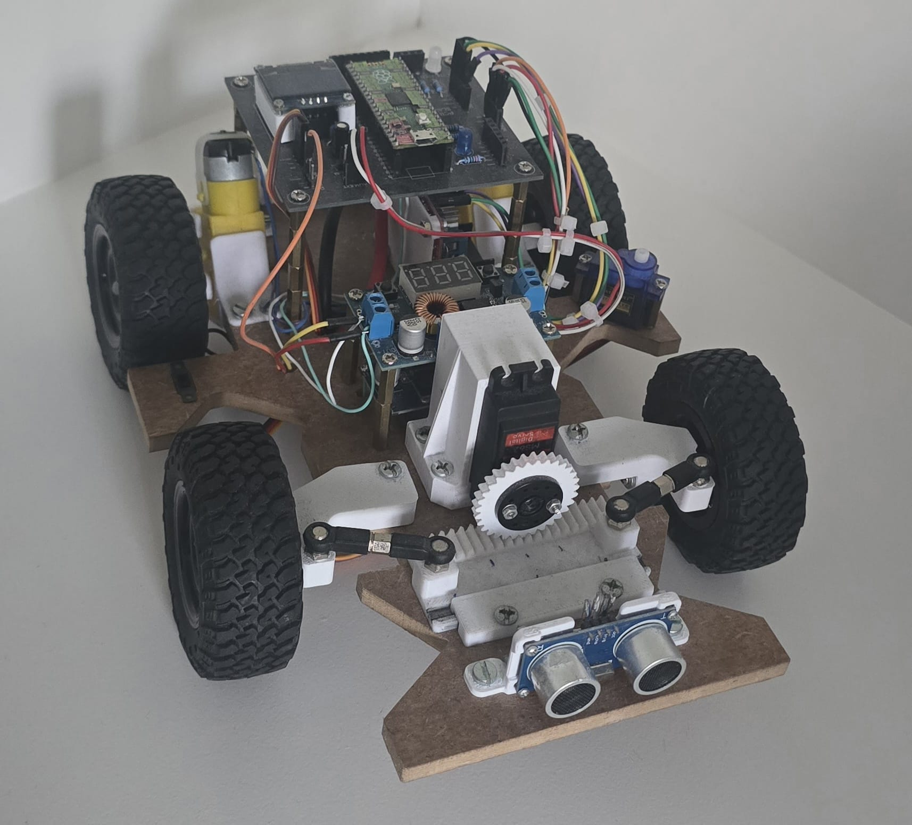
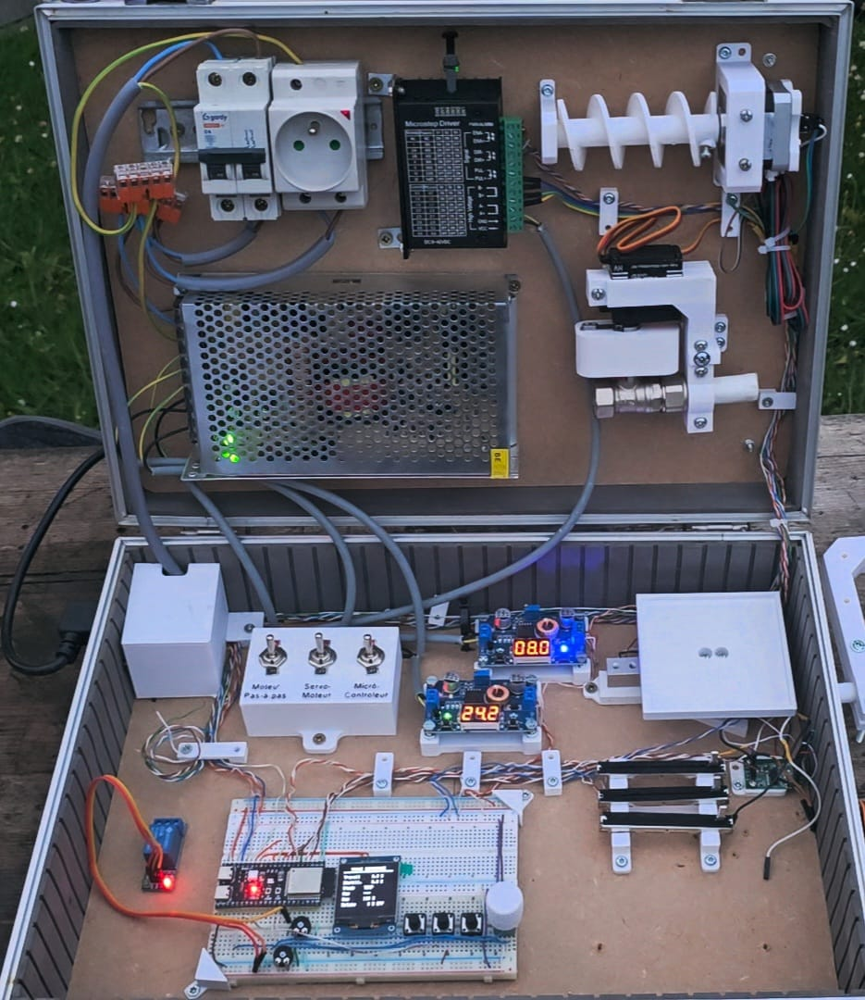
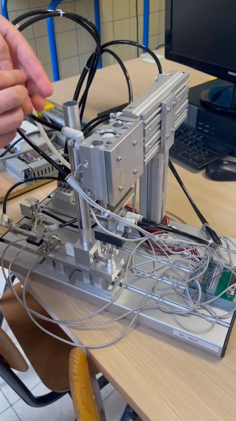
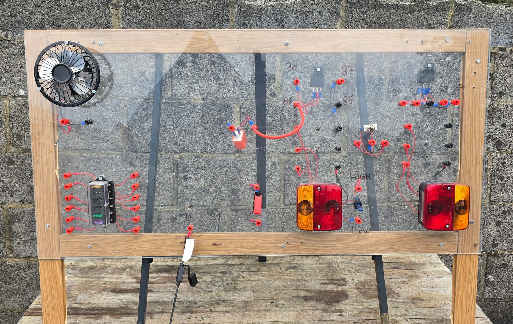
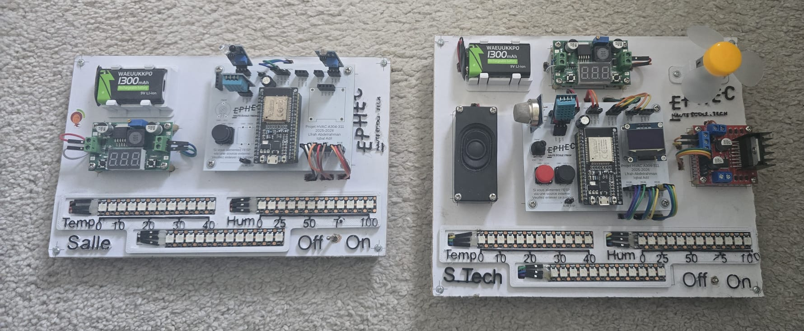
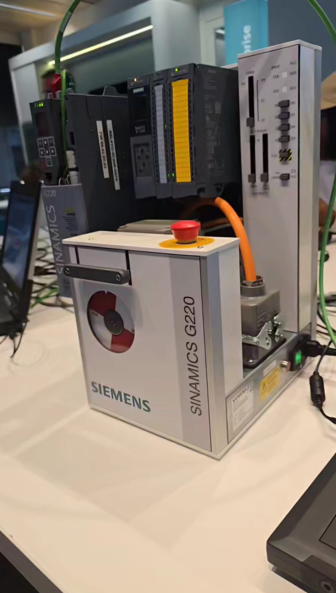
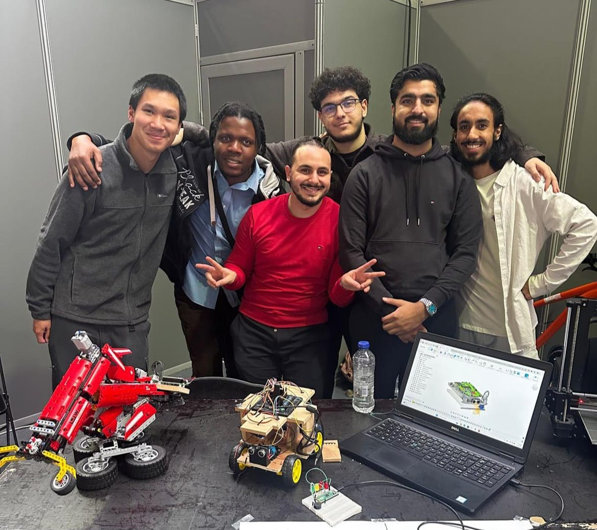
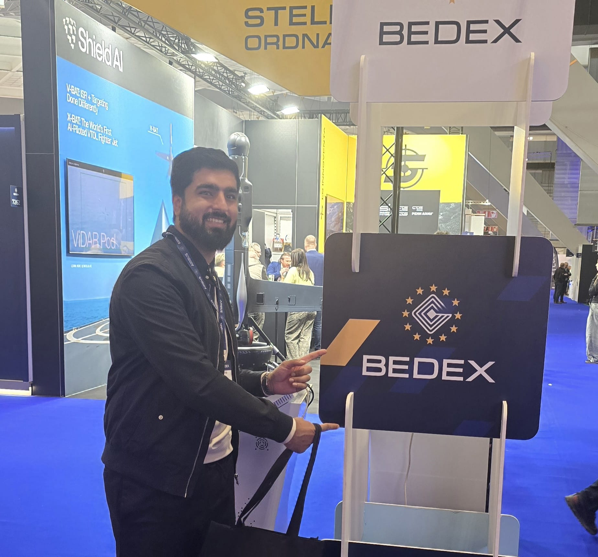
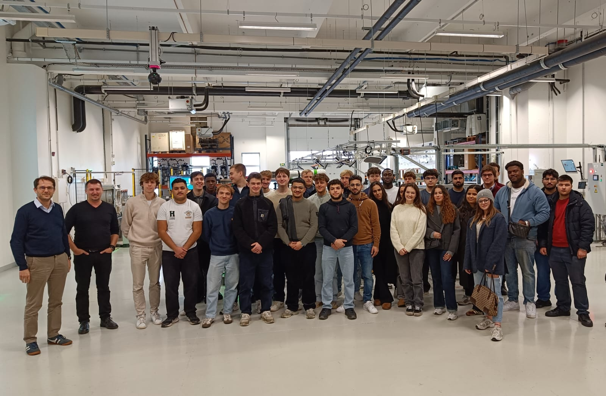
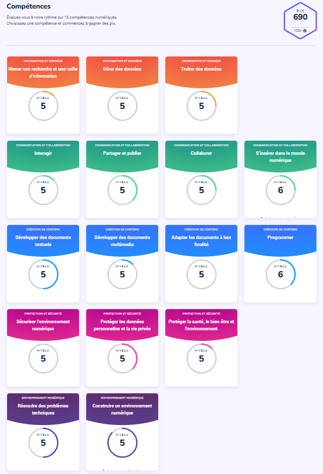

Automatisation industrielle
Compréhension et développement de systèmes automatisés.
Portfolio - Iqbal Adil
Passionné par les systèmes automatisés, l’électronique embarquée, la programmation et la réalisation de solutions techniques concrètes.
Découvrir mon parcoursJe m’appelle Iqbal Adil et je suis actuellement étudiant en dernière année en automatisation à l’EPHEC. Au cours de ma formation, j’ai développé un intérêt particulier pour les systèmes automatisés, l’électronique embarquée, la programmation et la conception de solutions techniques concrètes.
Mon parcours m’a permis de travailler sur plusieurs projets mêlant mécanique, électronique et informatique. J’ai notamment participé à la réalisation d’une voiture télécommandée, à la conception de cartes électroniques, ainsi qu’au développement de programmes pour des microcontrôleurs comme l’ESP32 et le Raspberry Pi Pico.
À travers ce portfolio, je souhaite présenter mon parcours, mes compétences, mes projets et mon évolution personnelle et professionnelle.
Au cours de ma formation en automatisation à l’EPHEC, j’ai acquis des compétences dans plusieurs domaines techniques :
Compréhension et développement de systèmes automatisés.
Développement de programmes pour des systèmes embarqués.
Lecture de schémas, câblage, tests et analyse de circuits.
Réalisation de prototypes pour valider des solutions techniques.
Réalisation de PCB pour différents projets techniques.
Utilisation de VSCode, PlatformIO, Fusion 360, TIA Portal, CODESYS, LabVIEW et GitHub.
Ce projet m’a permis de travailler sur la conception d’un système mobile commandé à l'aide d'une manette. Il regroupait plusieurs aspects importants : la partie mécanique, le câblage, la commande des moteurs, la gestion de l’alimentation et la programmation.

Dans le cadre de mon TFE, j’ai réalisé un banc de test afin de valider la logique de programmation avant l’intégration sur un prototype réel. Cette solution m’a permis de tester le fonctionnement général du programme dans un environnement contrôlé et de limiter les risques lors de la mise en service.

Dans le cadre du cours de projet d’automatisation, j’ai travaillé sur une maquette de mini-usine simulant une production industrielle. Le projet consistait à automatiser une chaîne permettant de trier et conditionner des canettes en packs de 2, 4 ou 6 unités en utilisant un automate Siemens S7-1200, des vérins pneumatiques et différents capteurs de position.

Ce projet est un banc pédagogique basé sur des éléments électriques automobiles. Il permet de raccorder différents composants à l’aide de fiches bananes afin de faire fonctionner des clignotants, des feux ou encore une ventilation. Il intègre également des relais automobiles, ce qui permet d’apprendre leur rôle, leur fonctionnement et leur utilisation dans un circuit réel.
L’objectif est de rendre l’apprentissage des circuits automobiles plus concret, plus visuel et plus ludique.

J’ai également travaillé sur plusieurs projets utilisant des microcontrôleurs, notamment avec des ESP32 et des Raspberry Pi Pico. Ces projets m’ont permis de développer mes compétences en programmation embarquée, en gestion de capteurs, en affichage, en commande PWM et en commande d’actionneurs.

J’ai participé à un workshop Siemens basé sur l’utilisation du variateur SINAMICS G220. À travers un atelier pratique, cette activité m’a permis de découvrir le fonctionnement d’un variateur industriel, sa configuration et son utilisation dans un contexte d’automatisation.

Durant cette année, j’ai suivi le KNX Basic Course. Cette formation m’a permis de découvrir les bases du standard KNX, utilisé dans l’automatisation du bâtiment, notamment pour la gestion de l’éclairage, des commandes, et des équipements connectés.
Voir la certification KNXJ’ai participé au festival I Love Science avec l’EPHEC. Lors de cet événement, j’ai contribué à l’accueil des visiteurs et à la présentation de quelques projets qui ont été réalisés à l'EPHEC. Cette expérience m’a permis de partager mon intérêt pour la technologie avec un public plus jeune et de valoriser les projets réalisés.

J’ai participé au salon BEDEX, ce qui m’a permis de découvrir différentes entreprises dans le domaine technique. Cette visite m’a aidé à élargir ma vision du monde professionnel et à mieux comprendre certaines possibilités liées aux métiers techniques et industriels.

J’ai participé à une semaine internationale en France sur le thème de l’intelligence artificielle au service de la quatrième révolution industrielle. Cette expérience m’a permis de réfléchir à l’impact de l’IA sur les métiers techniques et industriels.

J’ai aussi participé à la Journée Entreprendre ton Futur organisée à l’EPHEC. Cet événement m’a permis d’assister à différentes présentations liées au monde professionnel, de mieux comprendre les attentes des entreprises et de réfléchir à mon orientation après mes études.
Dans le cadre de ma formation, j’ai participé aux activités de prévention et de sécurité organisées à l’école. Ces activités m’ont permis de mieux comprendre l’importance des comportements responsables dans un environnement technique ou professionnel.
J’ai également réalisé et réussi les serious games liés à la prévention. Ces exercices interactifs m’ont permis d’aborder différentes situations à risque de manière concrète et de renforcer mes connaissances sur la sécurité, la prévention des accidents et les bonnes pratiques à adopter.
Cette section permet de présenter ma progression sur PIX, où j’ai obtenu un score de 690 points, ainsi que les compétences numériques développées durant mon parcours.

Vous pouvez me contacter par e-mail pour toute question, collaboration ou échange professionnel.